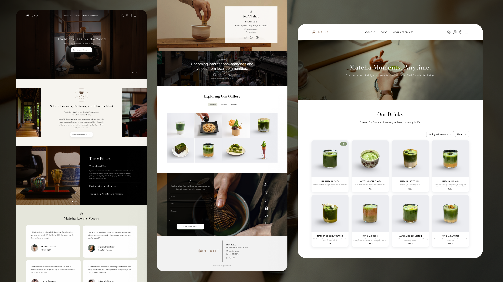

Requirement
Nokot needed a responsive landing page that could introduce its Japanese matcha café and encourage people to visit its Ekkamai location. The experience needed to express the care behind Japanese tea preparation while making the café feel welcoming and easy to discover in Bangkok.
The primary audience included matcha enthusiasts, nearby residents and office workers, café explorers, and visitors looking for a calm place to enjoy thoughtfully prepared drinks and desserts.
- Business goal: Build local awareness, communicate Nokot’s character, and turn online interest into in-store visits.
- Core message: Present Nokot as a focused matcha café where Japanese tea craft meets a relaxed Ekkamai experience.
- Content hierarchy: Begin with the café atmosphere and value proposition, then introduce the story, menu highlights, matcha preparation, space, location details, and a clear visit or directions action.
- Practical information: Make menu highlights, opening hours, address, map directions, contact details, and social channels easy to find.
- Visual direction: Use generous spacing, refined typography, natural photography, and a quiet palette inspired by matcha, paper, wood, and Japanese café culture.
- Responsive experience: Prioritize mobile visitors arriving from search, maps, and social media while preserving an immersive visual story on larger screens.

Design Thinking Process
I used a design thinking process to balance the emotional appeal of the café with the practical information people need before deciding to visit. The page needed to create an appetite for the experience without making users search for essential details.
Empathize
I considered how people discover cafés through social media, maps, recommendations, and local search. Visitors often want to understand the menu, atmosphere, price level, location, and opening hours before choosing where to go.
Define
I defined the main design challenge: communicate Nokot’s Japanese matcha identity and sense of calm while helping visitors quickly answer practical questions about what the café offers and how to reach it.
Ideate
I explored a content flow built around a strong café image, concise brand story, signature drinks and desserts, matcha preparation details, interior atmosphere, location information, and repeated map or visit calls to action.
Mockup
I developed mobile-first wireframes and high-fidelity layouts in Figma, testing how photography, menu content, opening details, and map actions could remain clear across mobile, tablet, and desktop screens.
Test and refine
I would review the page with the café team and potential visitors, checking whether the brand feels authentic, key information is easy to scan, directions are clear, and the experience encourages a real-world visit.
The final direction creates a calm digital introduction to Nokot while giving visitors a direct path from discovery to arrival. Its reusable sections can also support seasonal drinks, new menu items, events, and future café updates.